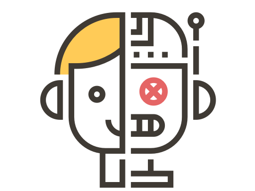

<!--
  Generated template for the ForoPage page.

  See http://ionicframework.com/docs/components/#navigation for more info on
  Ionic pages and navigation.
-->
<ion-header>
  <ion-navbar color="nvColor">
    <button ion-button menuToggle>
      <ion-icon name="menu"></ion-icon>
    </button>
    <ion-title>Foro</ion-title>
  </ion-navbar>
</ion-header>

<ion-content padding class="fn">
  
    <ion-list no-lines> <!-- lista para mostrar los mensajes -->
  
      <div *ngFor="let message of messageHistory"> <!--Se recorren los mensajes-->
  
        <ion-item class="messageBot" *ngIf="!message.fromUser" text-wrap> <!-- Si el mensaje es del usuario -->
          <ion-avatar item-start>
            
          </ion-avatar>
          <h3>{{message.text}}</h3><!--Texto del mensaje-->
        </ion-item>
  
        <ion-item class="messageUser" *ngIf="message.fromUser" text-wrap><!--Si el mensaje es del agente-->
          <h3 text-right>{{message.text}}</h3><!--Texto del mensaje-->
          <ion-avatar item-end>
            
          </ion-avatar>
        </ion-item>
  
      </div>
  
    </ion-list>
  
  
  
  </ion-content>
  
  <ion-footer class="footer_page"><!--En footer para que la caja de texto del usuario siempre este visible-->
  
  
    <ion-grid>
      <ion-row>
        <ion-col col-10>
  
            <ion-item><!--Caja de texto para que el usuario escriba-->
              <ion-input type="text" placeholder="Escribe algo..." [(ngModel)]="user_textToSend"
                maxlength="200"></ion-input>
            </ion-item>
  
        </ion-col>
        <ion-col col-2>
  
          <button ion-button round clear icon-only (click)="sendMessage()"><!--Detona la acción de enviar el mensaje al agente-->
            <ion-icon name="send"></ion-icon>
          </button>
  
        </ion-col>
      </ion-row>
    </ion-grid>
  
  </ion-footer>

  <!--
    https://api.adorable.io/avatars/285/nico.png
  https://api.adorable.io/avatars/285/carlos.png
  -->